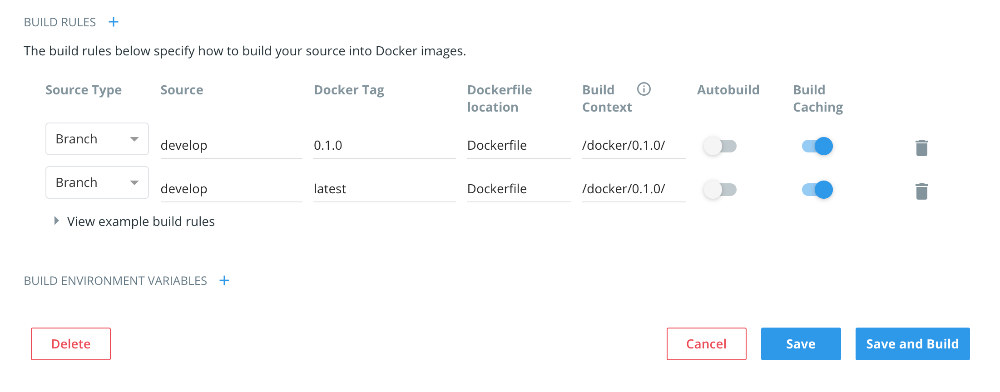

在DockerHub发布Dubbo Admin镜像
Dubbo Admin是Dubbo的服务治理中心，提供了大量日常运维所需的服务治理、配置管理等功能。
Dubbo Admin同时包含了前端代码和后端代码，如果用户需要自己下载源码并编译打包，需要花费一定时间。 特别是对于一些希望快速调研和试用Dubbo Admin的用户，这种流程的体验并不是很好。
Docker是一个开源的应用容器引擎，让开发者可以打包应用以及依赖包到一个可移植的镜像中，社区对于提供Dubbo Admin镜像的呼声较高。 Docker官方维护了一个公共仓库DockerHub，该仓库还有很多国内镜像，访问速度快，将Dubbo Admin镜像发布到DockerHub是一个较好的选择。
DockerHub账号申请
要在DockerHub上发布镜像，自然需要对应的账号。 而DockerHub有两种常见账号，一种是面向个人的，一种是面向组织的。Apache在DockerHub上有一个组织账号[1]。 自然我们首选是发布在组织账号下。
DockerHub对于组织账号的管理是基于组的，也就是一个组织账号下有多个组，每个组有不同的成员，而一个组可以管理一个或者多个镜像。
所以要做的第一步就是申请权限，这个需要提一个issue给Apache Infrastructure团队，申请DockerHub的镜像仓库和组权限。 目前镜像和组已经申请好了，只需要申请组的权限就行了，可以参考之前的申请[2]。
申请完权限以后使用Apache账号登陆应该就可以看到对应的镜像和配置选项了。
添加新的构建规则
发布镜像到DockerHub有两种办法，一种是本地构建好镜像以后远程push到DockerHub，另外一种是提供Dockerfile并借助DockerHub提供的构建功能直接在DockerHub构建。 后者明显操作性和便捷性要好很多，目前Dubbo Admin的镜像也是这样构建发布的。
当Dubbo Admin有新版本发布以后，需要在项目的docker目录新增一个Dockerfile文件，可以参考目前0.1.0版本的Dockerfile[3]，其中的配置根据具体的版本可能有细微差别，但是大致上是一致的。
在添加了Dockerfile之后，进入DockerHub对应的管理界面新增Build Rules

根据实际情况填写即可。这里需要注意两点：
- latest 版本要和最新的版本配置一致
- 不要勾选Autobuild
勾选Autobuild会导致每次git提交都会触发自动构建，但是由于Dubbo Admin不提供snapshot的Docker镜像，所以只有发布新版本的时候才需要构建发布。
修改以后点Save，然后手动触发构建即可。
总结
总的来说DockerHub上发布镜像的步骤并不复杂，如果已经申请过权限的话，操作起来是很流畅的。
另外DockerHub的构建是需要排队的，有时候会遇到长时间没有开始构建的情况，需要耐心等待。